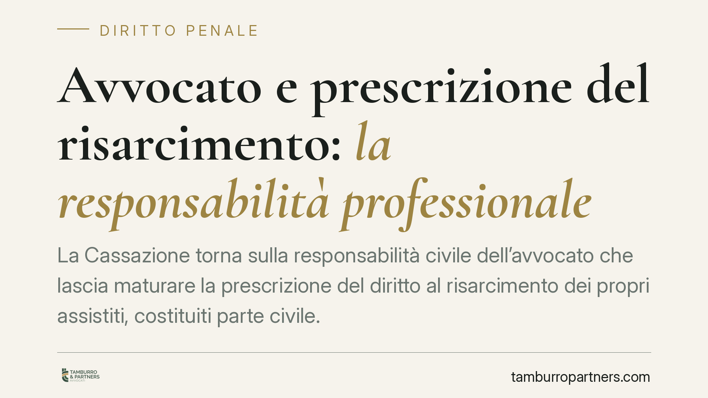

Avvocato e prescrizione del risarcimento: la responsabilità professionale
La Cassazione torna sulla responsabilità civile dell'avvocato che lascia maturare la prescrizione del diritto al risarcimento dei propri assistiti, costituiti parte civile. Due i punti chiave: il mandato può provarsi anche senza procura alle liti e la polizza professionale non copre il dolo né la comunicazione tardiva del sinistro. Un tema che interessa ogni professionista e ogni cliente.

Il caso
Alcuni clienti, costituiti parte civile in un processo penale, affidano a un avvocato la tutela delle proprie ragioni risarcitorie. Il diritto al risarcimento, però, si prescrive senza che l'azione venga coltivata in sede civile. I clienti agiscono allora contro il legale per il danno subìto: la perdita definitiva di un credito che avrebbero potuto azionare.
La Corte d'appello e, in sede di legittimità, la Cassazione (Sez. III civile) confermano la responsabilità professionale. La pronuncia offre spunti su tre fronti: la prova del mandato, la natura del danno e i limiti della copertura assicurativa.
*Nota: il numero e l'anno dell'ordinanza citati dalla fonte appaiono non verificabili (riferimento a un'annualità futura). Riportiamo quindi il principio di diritto, invitando a verificare gli estremi esatti prima di qualunque uso in sede difensiva.*
Mandato sostanziale e procura alle liti
Un primo chiarimento riguarda la prova dell'incarico. L'avvocato sosteneva di non aver ricevuto un mandato formale per l'azione risarcitoria in sede civile, mancando una procura alle liti specifica (art. 83 c.p.c.).
La Corte distingue due piani. La procura alle liti è l'atto formale con cui si conferisce al difensore il potere di rappresentare la parte in giudizio. Il mandato sostanziale, invece, è il rapporto professionale tra cliente e avvocato, che può provarsi anche per fatti concludenti: corrispondenza, incontri, attività materialmente svolta. In altre parole, l'assenza della procura scritta non esclude che il professionista fosse incaricato di tutelare gli interessi risarcitori del cliente.
La prescrizione del danno da reato
Punto centrale, e spesso trascurato, è il regime della prescrizione. Il diritto al risarcimento del danno da fatto illecito si prescrive, in via ordinaria, in cinque anni (art. 2947, comma 1, c.c.).
Quando il fatto costituisce reato, l'art. 2947, comma 3, c.c. prevede che si applichi il termine di prescrizione più lungo eventualmente stabilito per il reato, se superiore. Il professionista deve quindi calcolare con attenzione quale termine governi il credito del cliente, perché un errore di computo può tradursi nella perdita definitiva dell'azione. È esattamente ciò che è accaduto nel caso in esame.
Il danno: la chance perduta
Il danno risarcibile non coincide automaticamente con l'intero importo che il cliente avrebbe potuto ottenere. Si tratta, piuttosto, della perdita della chance di conseguire quel risultato: la privazione di un credito che era azionabile e che, per effetto della prescrizione, non lo è più.
La valutazione tiene conto delle probabilità che l'azione, se tempestivamente coltivata, sarebbe stata accolta. È una misura prognostica, non un automatismo.
Assicurazione RC e responsabilità avvocato: i limiti della polizza
L'avvocato invocava la copertura della propria polizza di responsabilità civile professionale, disciplinata quanto al tipo contrattuale dall'art. 1917 c.c.
La copertura, però, incontra due limiti rilevanti. In primo luogo, l'art. 1900 c.c. esclude l'indennizzo per i sinistri cagionati con dolo dell'assicurato: la polizza non interviene quando la condotta è intenzionale. In secondo luogo, l'art. 1913 c.c. impone all'assicurato di dare avviso del sinistro all'assicuratore entro i termini stabiliti; la comunicazione tardiva può pregiudicare l'operatività della garanzia.
Nel caso esaminato, entrambi i profili concorrono a escludere l'intervento della compagnia, lasciando il professionista esposto in proprio.
Implicazioni pratiche
Per il professionista: la responsabilità scatta anche in assenza di procura formale, se l'incarico risulta da fatti concreti. La gestione dei termini di prescrizione è un obbligo tecnico non delegabile all'improvvisazione, e la polizza non è una rete di sicurezza assoluta.
Per il cliente: la perdita di un credito per inerzia del legale può fondare una domanda risarcitoria autonoma, anche quando l'incarico non era formalizzato per iscritto.
Cosa fare in concreto
- Censite i termini: per ogni pratica, annotate la data di decorrenza e di scadenza della prescrizione, verificando l'eventuale termine più lungo da reato (art. 2947 c.c.).
- Formalizzate l'incarico: adottate lettere di incarico scritte che delimitino con chiarezza l'oggetto del mandato.
- Comunicate tempestivamente il sinistro: al primo segnale di un possibile addebito, date avviso all'assicuratore nel rispetto dell'art. 1913 c.c.
- Verificate le esclusioni di polizza: leggete con attenzione le clausole su dolo e tardività, perché definiscono i confini reali della copertura.
- Documentate l'attività: conservate ogni traccia dell'attività svolta, utile sia in difesa sia per ricostruire il mandato.
Il principio di fondo è netto: conta la sostanza dell'incarico ricevuto, non la sua veste formale.
Contributo informativo a cura di Tamburro & Partners - Avv. Giuseppe Tamburro. Non costituisce parere legale.
Ogni condominio ha una storia a sé.
Se gestisci un'amministrazione e vuoi un confronto su una specifica questione condominiale, scrivi allo studio. Ti rispondiamo entro un giorno lavorativo.